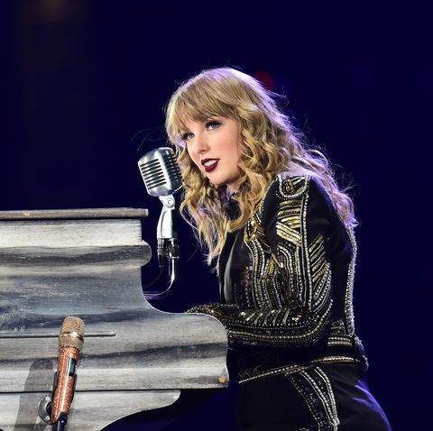
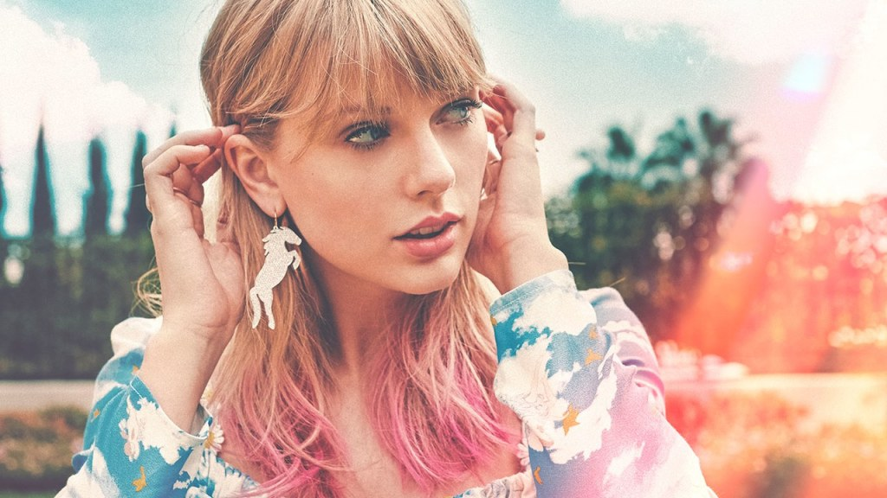

Getaway Car It was the best of times, the worst of crimes I
struck a match and blew your mind But I didn't mean it And you didn't
see it The ties were black, the lies were white In shades of gray and
candlelight I wanted to leave him I needed a reason X marks the spot
where we fell apart He poisoned the well, I was lying to myself I knew
it from the first Old Fashioned, we were cursed We never had a shotgun
shot in the dark (Oh!)
You were drivin' the getaway car We were flyin', but we'd never get far
Don't pretend it's such a mystery Think about the place where you first
met me Ridin' in a getaway car There were sirens in the beat of your heart
Should've known I'd be the first to leave Think about the place where you
first met me In a getaway car (Oh-oh-oh) No, they never get far (Oh-oh-ah)
No, nothing good starts in a getaway car.
It was the great escape, the prison break The light of freedom on my face
But you weren't thinking And I was just drinking Well, he was running
after us, I was screaming, "Go, go, go!" But with three of us, honey, it's
a sideshow And a circus ain't a love story And now we're both sorry (We're
both sorry)

X marks the spot where we fell apart He poisoned the well, every man for
himself I knew it from the first Old Fashioned, we were cursed It hit you
like a shotgun shot to the heart

We were jet-set, Bonnie and Clyde (Oh, oh) Until I switched to
the other side, to the other si-i-i-i-ide It's no surprise, I turned you
in (Oh, oh) 'Cause us traitors never win I'm in a getaway car I left you
in the motel bar Put the money in a bag and I stole the keys That was the
last time you ever saw me